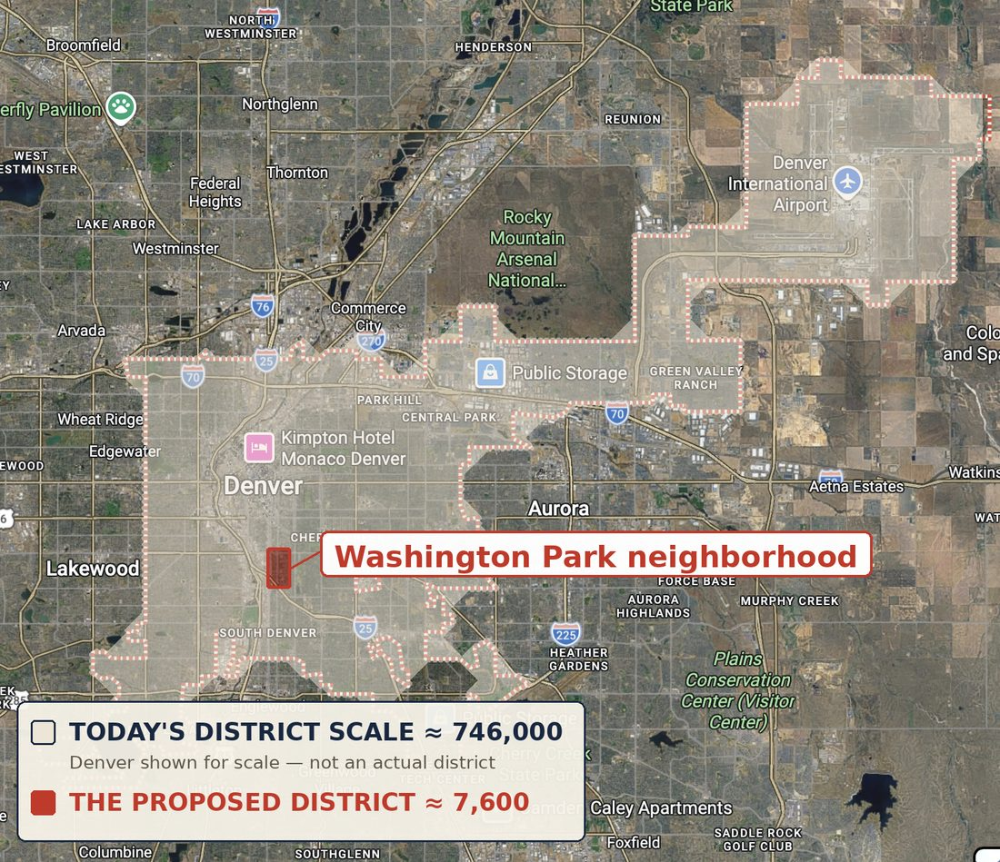
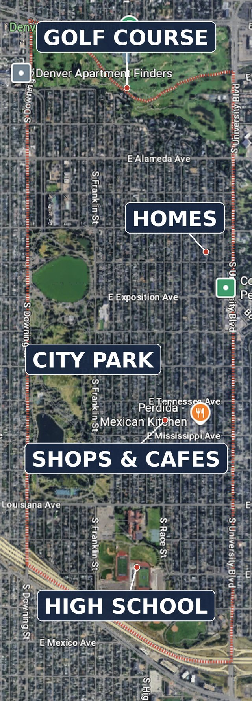

Ordinary people should be able to govern themselves.
The American promise was self-government — a government of the people, by the people. Not one that occasionally asks the people’s opinion, but one the people actually run.
The test isn’t whether we hold elections. It’s whether ordinary people can enter and shape their government, or can only stand outside and watch it. Right now, for almost everyone, it’s watching — the previous page traced why. This page is the fix, and that one idea is its standard: it is the reason for everything below, the promise of what a fix delivers, and the test every piece must pass. If a change doesn’t put real power closer to ordinary people’s hands, it doesn’t count.
The proposal: make the districts the size of an actual community.
Around 7,600 people — a few adjoining neighborhoods. Divide the country into districts that size and the House of Representatives comes to roughly 43,500 members: about one hundred times today’s chamber.
There is no magic in either number. What matters is the scale: small enough that a candidate can reach a meaningful share of voters face to face, that local reputation counts for more than mass media, and that a person can run without first building a fundraising network. Districts in the low thousands create that kind of relationship; 7,600 is one illustration, not a threshold.
Stated coldly, 43,500 sounds radical. In scale, it is. The next three sections show why it is also the plain conclusion of three intuitions most people already hold.
Sources & calibration
- 100x districts would hold about 7,600 people — internal: population / 43,500. Supports: The proposal; scale illustration ('one illustration, not a precise threshold'). Does not support: A magic number
- One U.S. House member represents about 760,000 people — Census apportionment population / 435. Supports: Scale diagnosis.
- The Constitution bars more than one representative per 30,000 people — a floor on district size, capping the House at roughly 11,000-11,300 today — U.S. Const. Art. I §2; arithmetic on current population. Supports: Why 7,600-person districts REQUIRE an amendment (load-bearing constraint).
Representation becomes a relationship again.
What would it mean for your representative to actually represent you?
Representation is a relationship, and relationships don’t scale forever. A person can know, and be known by, a community of a few thousand. No one can know 760,000. Past a certain size, representing people stops meaning knowing them and starts meaning managing them from a distance — the representative learns about you through polls, and you encounter them through advertisements. You’ve lived the difference: a city councilmember might answer your email; your member of Congress sends a form letter.
At 7,600, the relationship inverts. Your representative lives nearby, shares your roads and schools and local economy, and is reachable at the grocery store and the school board meeting. And closeness creates what distance never can: real accountability. A seat of 760,000 is too expensive for almost anyone credible to challenge. Shrink the community and a challenge becomes possible — so the person holding the seat has to keep deserving it.
None of this is an invention. It’s a restoration. The House grew with the country for 120 years; the founders worried about districts becoming too large, not the chamber too big — Washington’s only substantive intervention at the Constitutional Convention was to make districts smaller, and Madison’s first proposed amendment was written to force the House to keep growing. This proposal goes much further than they did, and says so plainly. But it extends an American principle; it doesn’t import a foreign one.


Sources & calibration
- One U.S. House member represents about 760,000 people — Census apportionment population / 435. Supports: Scale diagnosis.
- 100x districts would hold about 7,600 people — internal: population / 43,500. Supports: The proposal; scale illustration ('one illustration, not a precise threshold'). Does not support: A magic number
- For the country's first ~120 years the House grew with population, decade after decade — House historical apportionment record. Supports: Restoration framing.
- Washington's rare substantive intervention at the Convention supported lowering the ratio from 1:40,000 to 1:30,000; his first veto concerned apportionment — Convention records; veto record. Supports: Founders worried about distance, not size. Does not support: That founders designed a 43,500-member House (they did not)
- Madison's 'Article the First' — the first amendment ever proposed — was designed to keep the House growing; it fell one state short by the end of 1791 and remains technically pending — Bill of Rights ratification record. Supports: The road not taken; restoration framing; How We Win reprise. Does not support: That it would reach 43,500 (its formula lands ~6,000; a separate amendment is still required)
A campaign your community can actually afford.
What does running look like when the district is 7,600 people — roughly 3,000 households in a few adjoining neighborhoods?
It looks like a neighborhood effort. A basic website, printed pamphlets, two district-wide mailers, community meetings, some targeted digital, signs, and compliance — on the order of $20,000, not $2.3 million. It looks like you and nine friends dividing a map: three hundred doors each, Saturdays for a month. At this scale, door-knocking, volunteers, and standing reputation outcompete mass media — which means the test changes. Not: can you raise millions and assemble a political network? But: can you earn the trust of 7,600 people who can find out who you are?
The same shift snaps the money leash. Leadership’s control over big campaign accounts is powerful today because members need that money to survive districts this expensive. It goes slack when a seat can be won through a community instead of a media market.
And the payoff runs to voters, not just candidates: choice among kinds of people who were never on the menu — the nurse, the electrician, the teacher, the small-business owner your community already trusts.
Sources & calibration
- An illustrative competitive House campaign: ~$2.3M over 15 months (~$5,000/day raised) — internal illustrative model (V3), consistent with reported competitive-race ranges. Supports: Money barrier anatomy. Does not support: A universal average (label ILLUSTRATIVE on the exhibit)
- 100x districts would hold about 7,600 people — internal: population / 43,500. Supports: The proposal; scale illustration ('one illustration, not a precise threshold'). Does not support: A magic number
Power no small group can hold.
Why would 43,500 seats be safer than 435?
Because concentrated power fails in three ways at once — cheaper to influence, more damaging when abused, harder to correct — and spreading it out changes all three. Influence gets harder, because moving the system takes far more people. Abuse gets less catastrophic, because any one actor matters less. Correction gets easier, because no one holds enough power to entrench themselves.
This is not a new idea. It is one of the oldest in the American system — separation of powers, checks and balances, the federal-state division all come from the founders’ conviction that concentrated power is dangerous and must be divided. The proposal takes that instinct seriously and pushes it further, inside the House itself. And it is built the way the founders built: for self-interest, not virtue. A good system doesn’t depend on electing saints. It assumes people will pursue their interests and arranges power so no interest can easily dominate — ambition made to check ambition, extended to 43,500 seats.
What happens to leadership? It changes species. Today’s leadership power is control: the calendar, the committee seats, the campaign money — careers owned, votes following. In a chamber where members don’t need leadership’s money and no clique can dominate 43,500 careers, what remains is persuasion. Power earned repeatedly from people free to refuse is more legitimate — and far easier to contest — than power held through money and procedure.
Sources & calibration
- 100x districts would hold about 7,600 people — internal: population / 43,500. Supports: The proposal; scale illustration ('one illustration, not a precise threshold'). Does not support: A magic number
A House that can finally decide.
How does a body of 43,500 decide anything? By not doing the thing you’re picturing.
The picture — 43,500 people in one room, all writing laws at once — isn’t how any legislature works, including today’s. Detailed drafting already happens in committees of a few dozen; the floor’s job is the final vote. The proposal simply unbundles what the current House fuses: committees do the detailed work, and the full membership — each member with an equal, public vote — keeps the final say.
Scale, surprisingly, helps. A body of 43,500 has enough people to staff genuine specialist committees in every domain, instead of stretching a few hundred generalists across everything the federal government touches. And the disease of the current chamber — two whipped blocs voting on command — gets structurally harder to sustain: you cannot herd 43,500 members whose careers you don’t own into two rigid teams. Coalitions turn fluid, forming issue by issue. That is the opposite of gridlock, because gridlock requires stable opposing armies.
Sources & calibration
- 100x districts would hold about 7,600 people — internal: population / 43,500. Supports: The proposal; scale illustration ('one illustration, not a precise threshold'). Does not support: A magic number
Rules an ordinary person can read.
Could a system this large stay simple enough to check?
The democratic rules can — and in this design, must. A rule you can understand is a rule you can check. A rule only experts can follow is one they can quietly work to their advantage while everyone else takes it on faith. That’s not a style preference; it’s a safeguard. If ordinary people can’t follow the basic rules, the rules belong to insiders rather than the public — which is precisely where today’s House lives.
One distinction keeps this claim honest. Policy is often genuinely technical — tax law, weapons systems, banking regulation — and no reform makes it simple, nor does any citizen have to master it. The claim is narrower: the democratic rules — who may propose, how something reaches a vote, how it may be amended, who is accountable for the result — stay simple enough for an ordinary person to follow even when the policy they govern is not. In this design that’s a construction requirement, not a hope: equal public votes, published fixed thresholds, and no gatekeeper with the quiet power to bury a proposal forever.
Why 100× and not 10×?
There is a serious, mainstream debate about enlarging the House — to 585 seats, or the cube-root’s ~592, or the ~689 in the live bill before Congress. Those proposals are real, and directionally right. And every one of them would leave districts of half a million people or more: still a city’s worth of strangers, still a mass-media campaign costing millions, still a relationship no human being can maintain. A modest increase changes the number. It does not change the nature of the relationship.
Everything on this page — the campaign a community can afford, the money leash gone slack, reputation outcompeting media, a chamber no clique can whip — switches on only when districts shrink to community scale, in the thousands. That is the affirmative case for the scale. Not bigness for its own sake. The relationship.
| Today | At 100× |
|---|---|
| One representative manages 760,000 strangers | One representative knows a community of 7,600 |
| Reaching voters requires mass media | Reaching voters means door-knocking and reputation |
| Entry costs about $2.3 million | Entry is a community effort — about $20,000 |
| Careers depend on donors and leadership | Careers answer to neighbors |
| 435 capturable seats | 43,500 seats no clique can hold |
| Two whipped blocs | Fluid coalitions, issue by issue |
| Rules only insiders can follow | Rules anyone can read and check |
Sources & calibration
- Mainstream expansion proposals: AAAS +150 (585), Wyoming Rule (~577), cube-root (~592), REAL House Act (585) — AAAS 'Our Common Purpose'; respective proposals. Supports: The diagnosis is mainstream; why-100x-not-10x contrast. Does not support: 43,500 or community-scale districts (they explicitly stop far short)
- Rep. Sean Casten's Equal Voices Act (reintroduced June 2025, 119th Congress) would cap districts at ~500,000 people, growing the House to ~689 seats (+~230), with a multi-member/RCV option; part of his 'Common Sense Vision for American Democracy' package — casten.house.gov press release, June 2025; Congressional Digest; Vox (Feb 2026) built around the bill. Supports: A sitting member of Congress has a live expansion bill validating the diagnosis, current-year salience. Does not support: Community-scale districts (its ~500,000-person districts are ~65x larger than 7,600); the amendment path (it is statutory)
- Taagepera's cube-root rule implies ~690-700 seats for the US; most large democracies sit near their cube root — Taagepera; comparative legislature sizes. Supports: The strongest scholarly framework pointing the other direction (foil). Does not support: That 43,500 deliberates better than 690 (design rejects the deliberation premise, optimizes representation/accountability)
- An illustrative competitive House campaign: ~$2.3M over 15 months (~$5,000/day raised) — internal illustrative model (V3), consistent with reported competitive-race ranges. Supports: Money barrier anatomy. Does not support: A universal average (label ILLUSTRATIVE on the exhibit)
The tiebreaker.
Parts of this design will sometimes pull against each other — spreading power can add procedure; adding procedure can cost simplicity. When they do, one question decides: does this put real power in ordinary people’s hands, or does it merely move it between elites? A clever mechanism only specialists can operate hasn’t given power to the people; it has handed it to a new set of insiders. When in doubt, choose the version that keeps power closest to ordinary people — even when it’s less clever.
That is the case. The machinery comes next.
See how it would govern →